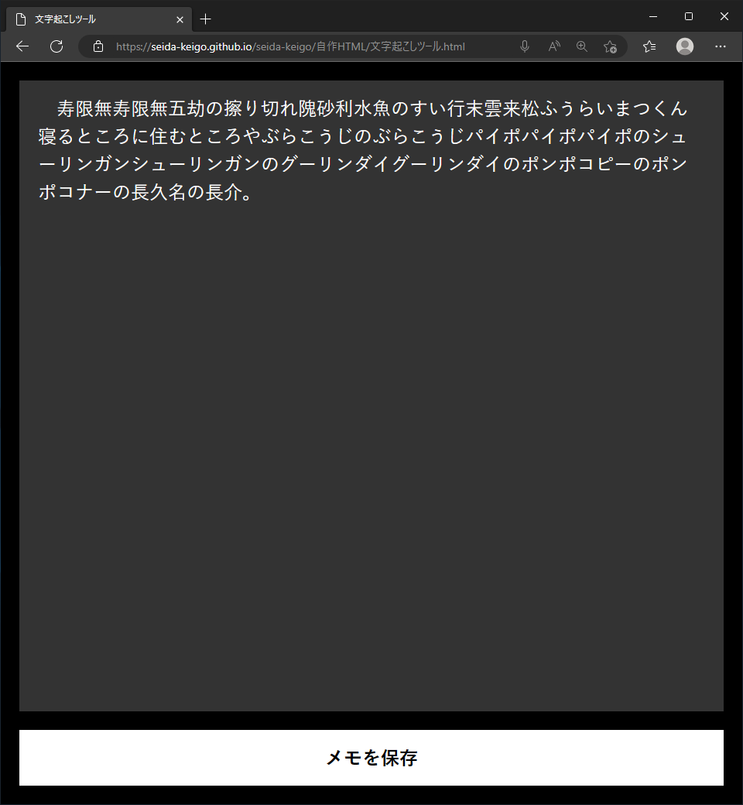
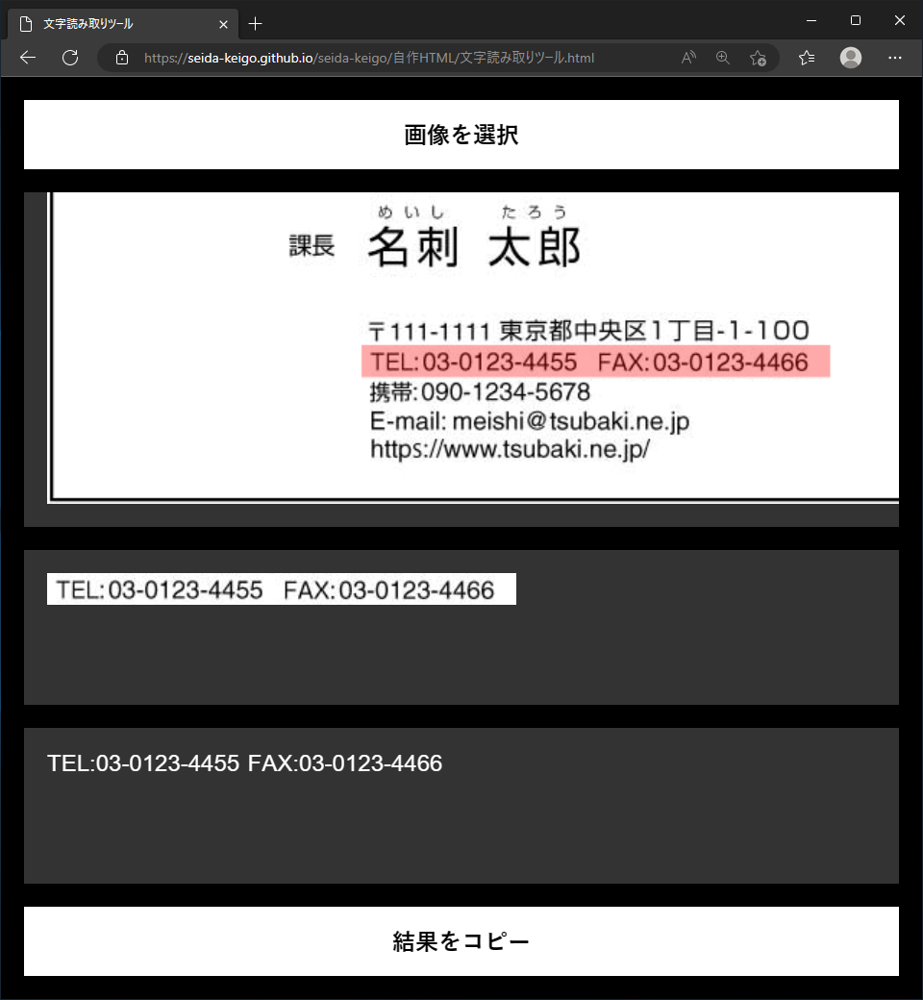

文字列変換ツール.html

JavaScriptを用いて、入力された文字列を自由に変換・コピーできます。文字列の一括置換などに役立ちます。（ソースコードはこちらです。）
どこでもテキストエディター.html

スマートフォンでもPCでも、ファイルを編集・作成・保存できます。（ソースコードはこちらです。）
読み上げツール.html

入力された文字列を読み上げます。文章の精読や、誤字の発見に役立ちます。（ソースコードはこちらです。）
文字起こしツール.html

音声から文字を書き起こします。口頭指示のメモなどに役立ちます。（ソースコードはこちらです。）
文字読み取りツール.html

Tesseract.js（とPDF.js）を用いて、画像・PDF内の英数字を読み取ります。電話番号などの読み取りに役立ちます。（ソースコードはこちらです。）
ピッチシフター.html

音声の音程（と速さ）を変更します。（ソースコードはこちらです。）
漢字でバイナリーエディター.html

入力されたファイルを1バイトずつ、U+4Exxの漢字(「一」～「仿」)に変換します。（ソースコードはこちらです。）
反転鏡.html

内カメラの映像と、マイクの音声を再生します。画角・身だしなみ・マイクのチェックに役立ちます。（ソースコードはこちらです。）
コンストラクター一覧.html

new演算子を使用できるコンストラクターの一覧を表示します。JavaScriptへの知見の拡大に役立ちます。表示内容は、ブラウザーに依存します。（ソースコードはこちらです。）
聖地コンパス.html

マッカ（メッカ）とケープカナベラルの方向を示します。（ソースコードはこちらです。）
All_Night_Music.py（Python）

テレビ東京のAll Night Musicで放送された曲の一覧のHTMLファイルを作成します。（Edgeドライバーを使用します。）作成されたHTMLファイルから、YouTubeで検索して視聴できます。（ソースコードはこちらです。）
セルフケアタイマー.vbs（VBScript）

（5n−1）分の時刻に、アラートが表示されます。過集中対策に役立ちます。（Windowsのみ可）（ソースコードはこちらです。）